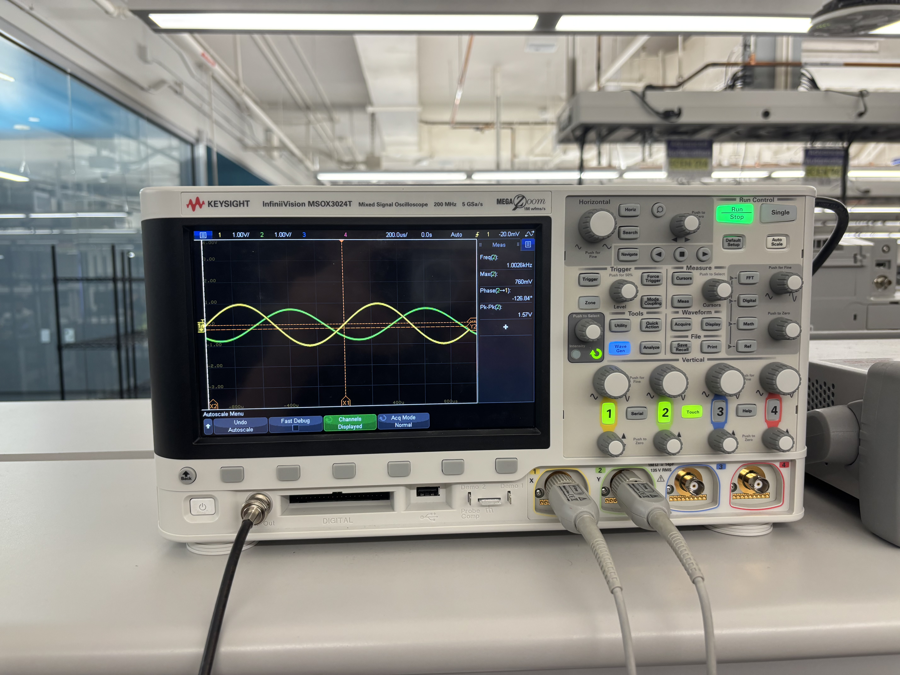
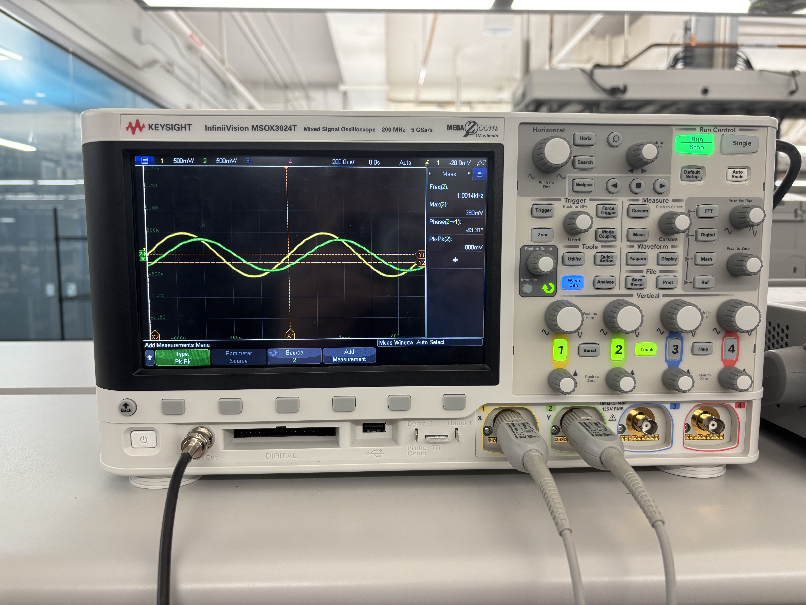
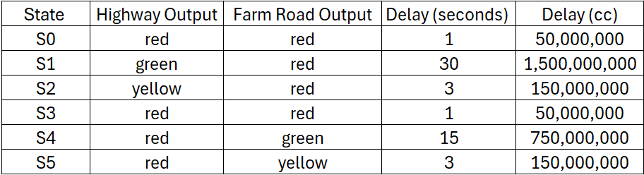
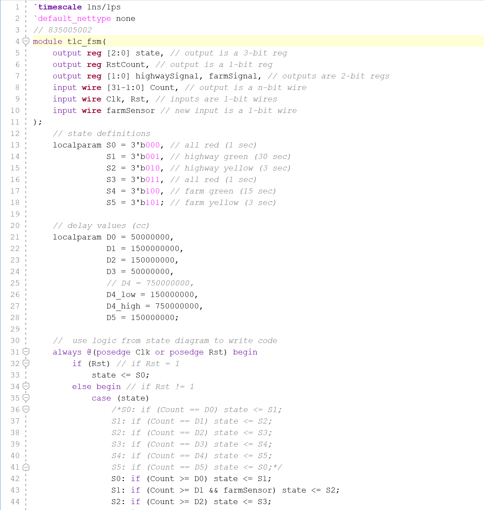
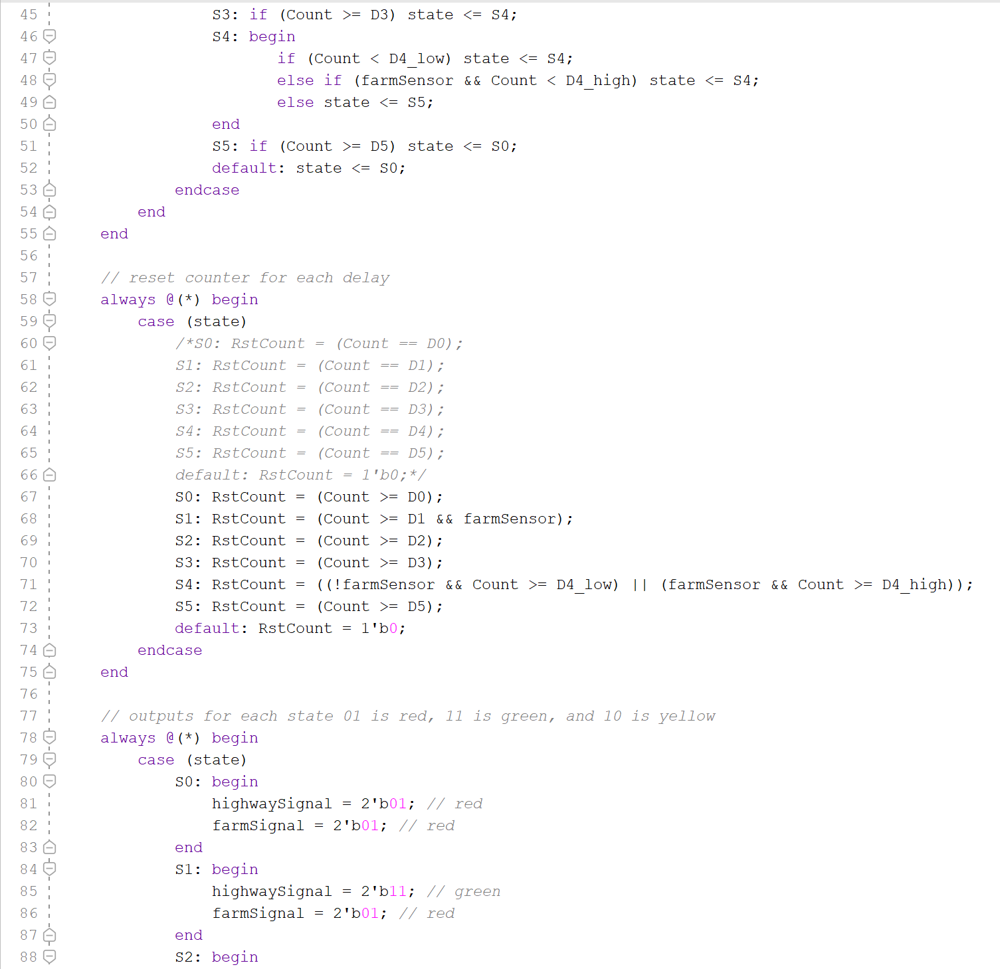
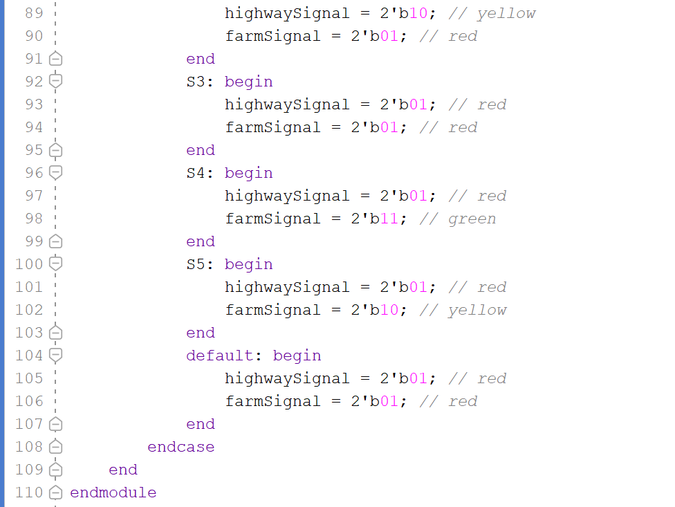
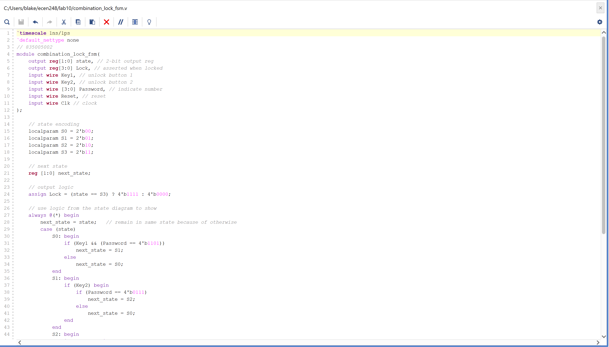
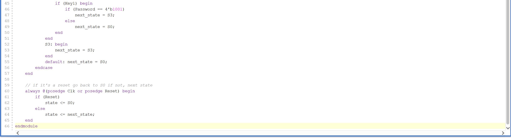
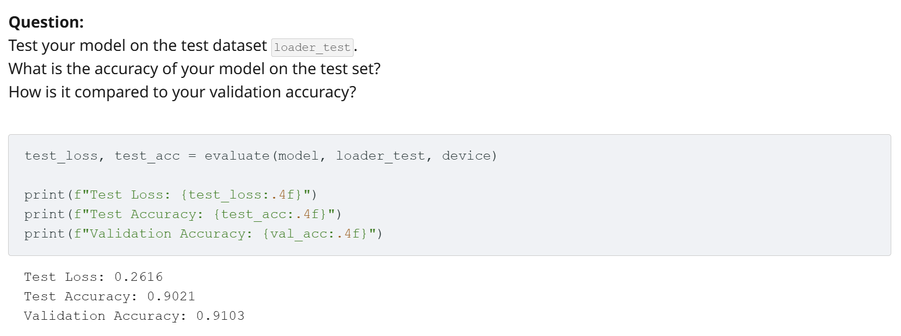

Selected Projects
ESP32 Three-Wheel RC Vehicle
The Objective
Build a three-wheel vehicle that can be controlled from a phone while safely integrating motors, sensing, mixed-voltage circuitry, and loss-of-communication protection.
The Approach
I built and troubleshot a breadboard prototype around an ESP32, L293D motor driver, and ultrasonic sensor. A 1 kΩ/2 kΩ divider reduced the sensor's 5 V output to approximately 3.3 V. After resolving insufficient motor power, I designed a two-layer KiCad PCB with Schottky-diode protection and power-supply decoupling.
I also developed a browser-based controller hosted through an ESP32 SoftAP and captive portal. Simultaneous touch inputs are translated into PWM motor commands over WebSockets, with a 500 ms communication-loss safety stop.
Cascaded Third-Order Frequency Response Experiment


The Objective
Build a cascaded third-order circuit and determine whether its measured magnitude and phase behavior follows the response predicted by its component transfer functions.
The Approach
My lab partner and I calculated the expected response, assembled the first- and second-order stages on a breadboard, and combined them into the third-order circuit. We used a signal generator and oscilloscope to record output magnitude and phase at 11 frequencies from 100 Hz through 10 kHz.
We compared the complete measurement table with the theoretical transfer-function behavior to identify the cutoff and roll-off of each stage and the combined circuit.
Six-State FPGA Traffic Controller




The Objective
Create a finite-state traffic controller that changes intersection timing in response to a vehicle sensor and demonstrate its behavior on physical FPGA hardware.
The Approach
I translated a six-state traffic sequence into Verilog state and transition logic, including sensor-dependent timing for the secondary roadway. Vivado waveforms were used to verify state changes and output timing before synthesis.
I deployed the controller to a ZYBO Z7-10 FPGA, mapped the traffic indications to onboard LEDs, and used physical button inputs to exercise the operating modes and confirm the controller's transitions on hardware.
Four-State FPGA Combination Lock


The Objective
Implement a sequential digital lock that accepts a specific series of 4-bit passwords and key inputs, rejects an incorrect sequence, and asserts its unlock output only after reaching the final state.
The Approach
I translated the lock sequence into a four-state Verilog finite-state machine with explicit state encoding, combinational next-state logic, and a clocked state register. Incorrect password or key inputs return the controller to its initial locked state.
The lock output is asserted only in the final state. I used Vivado to simulate and synthesize the design before mapping the password and key inputs to the ZYBO Z7-10 FPGA for physical validation.
FashionMNIST CNN Image Classifier

The Objective
Build and evaluate a convolutional neural network that classifies grayscale FashionMNIST images into 10 clothing categories.
The Approach
I first implemented 1D, 2D, and batched convolution operations in PyTorch, then checked the batched implementation against torch.nn.functional.conv2d to verify numerical equivalence.
I trained an optimized two-convolution-layer CNN using 48,000 training and 12,000 validation images. On the separate 10,000-image test set, the final model achieved 90.21% accuracy and 0.2616 loss, closely tracking its 91.03% validation accuracy.